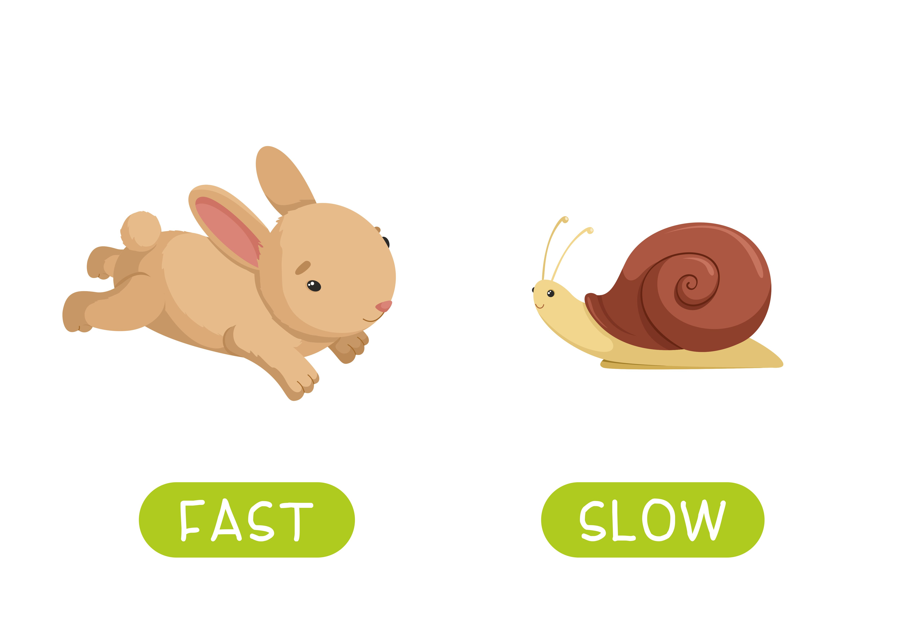
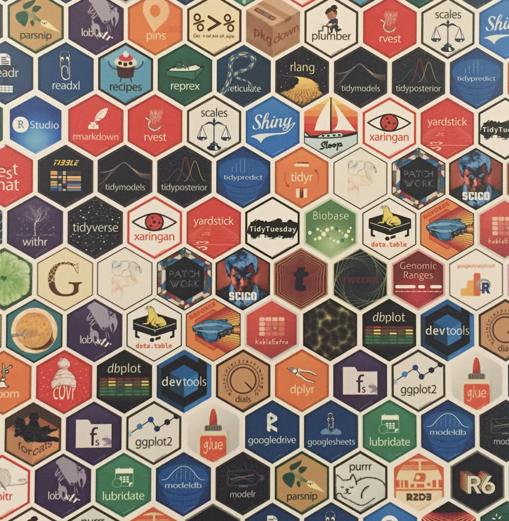

Introduction - Data Analysis with R
Welcome to Daa!
- Introductions
- Class overview
- Getting R up and running

[Photo by Belinda Fewings on Unsplash]
What is R?
R is a language and environment for statistical computing and graphics developed in 1991
R is the open source implementation of the S language, which was developed by Bell laboratories in the 70s.
The aim of the S language, as expressed by John Chambers, is “to turn ideas into software, quickly and faithfully”

Ross Ihaka and Robert Gentleman at the University of Auckland, New Zealand developed R
R is both open source and open development
R is a dialect of S(R is an implementation of the S programming language).
R was created by Ross Ihaka and Robert Gentleman at the University of Auckland, New Zealand, and is developed by the R Development Core Team.
R is a programming language and environment commonly used in statistical computing, data analytics and scientific research.
R is a programming language and free software environment for statistical computing and graphics supported by the R Foundation for Statistical Computing.
The R language is widely used among statisticians and data miners for developing statistical software and data analysis.

Why R?
Free (open source)
High level language designed for statistical computing
Powerful and flexible - especially for data wrangling and visualization
Extensive add-on software (packages)
R is popular – and increasing in popularity.
R runs on all platforms.(Windows, Linux and Mac)
R is being used by the biggest tech giants(google, facebook, microsoft, twitter)
Strong community
Why not R?
Little centralized support, relies on online community and package developers
Annoying to update
Slower, and more memory intensive, than the more traditional programming languages (C, Perl, Python)

[source -School vector created by nizovatina - www.freepik.com]
Introductions
What do you hope to get out of the workshop?
Why do you want to use R?
[Photo by Nick Fewings on Unsplash]
Course Platforms
- Website: https://chiraltraining.github.io/WW01_DataAnalysiswithR/
- Github: https://github.com/chiraltraining/WW01_DataAnalysiswithR
Materials will be uploaded the night before class. We are constantly trying to improve content! Please refresh/download materials before class.
Learning Objectives
- Understanding basic programming syntax
- Reading data into R
- Recoding and manipulating data
- Using add-on packages (more on what this is soon!)
- Making exploratory plots
- Performing basic statistical tests
- Writing R functions
Course Format
- Lecture with live coding (possibly “Interactive”)
- Lab/Practical experience
- Two 10 min breaks each session - timing may vary
Assignment Policy
- 20% of your grade will be determinded by an assignment during normal class hours.
- 40% of your grade will come from a 5-10 page report that explores in further detail one of the research areas in the class syllabus
- We expect that students will use orginal data collection, whether quantitative or qualitative analysis, to answer the questions posed.
- 20% of your grade will be determinded by your attendance and participation in class.
- 20% of your grade will come from 2 page research proposal writing that you must complete on two separate weeks of the class.
Required Textbooks
The following books purchased and are avilable at the online book store. We have also a placed a copy of each on reserve at our online library. - Fundamentals of Biostatistics by Bernard Rosner, Harvard University - Applied Statistics by PennState Eberly College of Science - Applied Medical Statistics for Beginners by Dr. Mohamed Elsherif - Biostatistics by University of Florida - Introduction to R Programming by Dr. Roger D. Peng
Resources: R Books
Resources: Blogs
- https://www.datamentor.io/r-programming/
- https://online.stat.psu.edu/stat484/
- https://online.stat.psu.edu/stat484/
- https://www.statmethods.net/index.html
- https://simplystatistics.org/
- https://www.tutorialspoint.com/r/index.htm
- https://www.rforbiologists.org/
- https://compgenomr.github.io/book/
- https://statsandr.com/
- https://rafalab.github.io/pages/harvardx.html
- https://bolt.mph.ufl.edu/software/r-phc-6055/
More Resources
- https://www.datamentor.io/r-programming/
- https://online.stat.psu.edu/stat484/
- https://online.stat.psu.edu/stat485/
- https://www.statmethods.net/index.html
- https://simplystatistics.org/
- https://www.tutorialspoint.com/r/index.htm
- https://www.rforbiologists.org/
- https://compgenomr.github.io/book/
- https://statsandr.com/
- https://rafalab.github.io/pages/harvardx.html
- https://bolt.mph.ufl.edu/software/r-phc-6055/
Datasets
- Mental Health and Suicide Rates1
- Western Africa Ebola Outbreak 2
- MERS Outbreaks 2012-20193
- H1N1 Swine Flu Pandemic 20094
- SARS Outbreak 20035
Your Setup
If you can, we suggest working virtually with a large monitor or two screens. This setup allows you to follow along on Zoom while also doing the hands-on coding.
Installing R
Install the latest version from: https://posit.co/
RStudio is an integrated development environment (IDE) that makes it easier to work with R.
More on that soon!
Basic terms
R jargon: https://link.springer.com/content/pdf/bbm%3A978-1-4419-1318-0%2F1.pdf
Package - a package in R is a bundle or “package” of code (and or possibly data) that can be loaded together for easy repeated use or for sharing with others.
Packages are sort of analogous to a software application like Microsoft Word on your computer. Your operating system allows you to use it, just like having R installed (and other required packages) allows you to use packages.

Function - a function is a particular piece of code that allows you to do something in R. You can write your own, use functions that come directly from installing R, or use functions from additional packages.
A function might help you add numbers together, create a plot, or organize your data. More on that soon!
sum(1, 20234)[1] 20235Argument - what you pass to a function
- can be data like the number 1 or 20234
sum(1, 20234)[1] 20235- can be options about how you want the function to work such as
digits
round(0.627, digits = 2)[1] 0.63round(0.627, digits = 1)[1] 0.6Object - an object is something that can be worked with in R - can be lots of different things!
- a matrix of numbers
- a plot
- a function
… many more
Variable and Sample
- Variable: something measured or counted that is a characteristic about a sample
examples: temperature, length, count, color, category
- Sample: individuals that you have data about -
examples: people, houses, viruses etc.
head(iris) Sepal.Length Sepal.Width Petal.Length Petal.Width Species
1 5.1 3.5 1.4 0.2 setosa
2 4.9 3.0 1.4 0.2 setosa
3 4.7 3.2 1.3 0.2 setosa
4 4.6 3.1 1.5 0.2 setosa
5 5.0 3.6 1.4 0.2 setosa
6 5.4 3.9 1.7 0.4 setosaColumns and Rows

[source]
Sample = Row
Variable = Column
Data objects that looks like this is often called a data frame.
Fancier versions from the tidyverse are called tibbles (more on that soon!).
More on Functions and Packages
- When you download R, it has a “base” set of functions/packages (base R)
Using Packages
- Not all packages available on CRAN or GitHub are trustworthy
- RStudio (the company) makes a lot of great packages
- Who wrote it? Hadley Wickham is a major authority on R (Employee and Developer at RStudio)
- How to trust an R package

(source: https://twitter.com/hadleywickham)
Tidyverse and Base R
We will mostly show you how to use tidyverse packages and functions.
This is a newer set of packages designed for data science that can make your code more intuitive as compared to the original older Base R.
Tidyverse advantages:
- consistent structure - making it easier to learn how to use different packages
- particularly good for wrangling (manipulating, cleaning, joining) data
- more flexible for visualizing data
Packages for the tidyverse are managed by a team of respected data scientists at RStudio.

See this article for more info.
Collection of R packages
Installation and use
Install all the packages in the tidyverse by running
install.packages("tidyverse").Run
library(tidyverse)to load the core tidyverse and make it available in your current R session.
Learn more about the tidyverse package at https://tidyverse.tidyverse.org.
Core tidyverse
The core tidyverse includes the packages that you’re likely to use in everyday data analyses. As of tidyverse 1.3.0, the following packages are included in the core tidyverse:
The tidyverse also includes many other packages with more specialised usage. They are not loaded automatically with library(tidyverse), so you’ll need to load each one with its own call to library().
Import
As well as readr, for reading flat files, the tidyverse package installs a number of other packages for reading data:
DBI for relational databases. (Maintained by Kirill Müller.) You’ll need to pair DBI with a database specific backends like RSQLite, RMariaDB, RPostgres, or odbc. Learn more at https://db.rstudio.com.
haven for SPSS, Stata, and SAS data.
httr for web APIs.
readxl for
.xlsand.xlsxsheets.rvest for web scraping.
jsonlite for JSON. (Maintained by Jeroen Ooms.)
xml2 for XML.
Wrangle
In addition to tidyr, and dplyr, there are five packages (including stringr and forcats) which are designed to work with specific types of data:
Program
In addition to purrr, which provides very consistent and natural methods for iterating on R objects, there are two additional tidyverse packages that help with general programming challenges:
magrittr provides the pipe,
%>%used throughout the tidyverse. It also provide a number of more specialised piping operators (like%$%and%<>%) that can be useful in other places.glue provides an alternative to
paste()that makes it easier to combine data and strings.
Note it may take ~5-10 minutes to run.
Useful (+ mostly Free) Resources
Found on our website under the Resources tab: https://jhudatascience.org/intro_to_r/resources.html
- videos from previous offerings of the class
- cheatsheets from the class
Useful (+ mostly Free) Resources
Want more?
Tidyverse Skills for Data Science Book: https://jhudatascience.org/tidyversecourse/ (more about the tidyverse, some modeling, and machine learning)
Tidyverse Skills for Data Science Course: https://www.coursera.org/specializations/tidyverse-data-science-r
(same content with quizzes, can get certificate with $)R for Data Science: http://r4ds.had.co.nz/
(great general information)R basics by Rafael A. Irizarry: https://rafalab.github.io/dsbook/r-basics.html (great general information)
Open Case Studies: https://www.opencasestudies.org/
(resource for specific public health cases with statistical implementation and interpretation)Dataquest: https://www.dataquest.io/
(general interactive resource)
Useful (+ mostly Free) Resources
Need help?
Various “Cheat Sheets”: https://www.rstudio.com/resources/cheatsheets/
R reference card: http://cran.r-project.org/doc/contrib/Short-refcard.pdf
R jargon: https://link.springer.com/content/pdf/bbm%3A978-1-4419-1318-0%2F1.pdf
R vs Stata: https://link.springer.com/content/pdf/bbm%3A978-1-4419-1318-0%2F1.pdf
R terminology: https://cran.r-project.org/doc/manuals/r-release/R-lang.pdf
Useful (+ mostly Free) Resources
Interested in Reproducibility?
Check out Candace’s courses:
Introduction: https://jhudatascience.org/Reproducibility_in_Cancer_Informatics/
Advanced: https://jhudatascience.org/Adv_Reproducibility_in_Cancer_Informatics/
Summary
- R is a powerful data visualization and analysis software language
- We will focus on packages (code shared among people) of the
tidyverse, which helps make R more intuitive. - We will also talk a bit about base R because some resources online and R users will use this.
- Functions perform specific tasks in R and are found within packages.
- Arguments within functions specify how a function is to be performed.
- Materials will be updated frequently as we improve it.
- Class surveys are available on CoursePlus so you can provide feedback!
- Lots of resources can be found on the website.